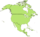

De: La Frikipedia, la enciclopedia extremadamente seria.
De: La Frikipedia, la enciclopedia extremadamente seria. De: La Frikipedia, la enciclopedia extremadamente seria.
| De la serie Países del planeta tierra: | |||||
| Belice | |||||
|---|---|---|---|---|---|
| |||||
| Lema: De marte vengo porque plata no tengo y si de la luna venís, jodete por infeliz. | |||||
| Himno: La martsellese
| |||||
|
| |||||
| Capital | La luna | ||||
| Mayor ciudad | GRAN hada | ||||
| Lenguas oficiales | Jedi y Bélico | ||||
| Gobierno | Nacional socialista Alemán | ||||
| Ladrón con dinero (Como todos los presidentes) | E.T. | ||||
| Área | Entre el arco y el punto del penal | ||||
| Población | 147000024 + iva | ||||
| Moneda | Usan tarjetas de crédito | ||||
| Zona horaria | +3,142 | ||||
| Dominio Internet | .mart | ||||
| Código telefónico | Usan telepatía
| ||||
| No es aconsejable visitar este país | |||||
Es una colonia Estadounidense marciana situada en algún lugar de Centroamérica.
En el siglo 5 a.C. los cavernícolas salieron de África en pequeños botes llevados por la corriente y se dio la casualidad de que fueron a parar a la costa de Belice, allí se asentaron y vivieron felices hasta que en el año -1019 a.C. llegaron los vikingos y, mediante cornadas con sus cascos y espadazos derrotaron a los cavernícolas y formaron una gran ciudad a la que llamaron "Santa cede", allí la cultura vikinga prospero muchísimos años, a tal punto que el país llego a tener mas habitantes que toda la Europa en esa época. Ya pasada la época de gloria vikinga debido al calentamiento global una colonia de marcianos y Jedis salieron de la película de Star Wars y con sus espadas láser y estrellas de la muerte mataron a todos los vikingos y se establecieron en ese lugar hasta la actualidad.
Según los últimos estudios, Belice queda en el Angulo superior equidistante respecto al Sol, o en términos mas sencillos queda en Centroamérica. Limita con EE.UU.(Al norte), Rusia( al sur), con Paraguay (al este y al oeste) y con Argentina (En una tercera dimension desconocida)
En Belice habitan varias especies humanoides. En total viven 147000024 habitantes, de los cuales 1,8% son Marcianos, 97,2% frikis y el 1% restante jedis.
La cultura allí es muy variada, ya que al ser habitado por extraterrestres, van seres de todas partes de la galaxia.
Las clases sociales son muy diferenciadas las unas de las otras y se representan en una pirámide dividida en tres.
Los bélicos extremadamente deportistas, entre los deportes mas populares se encuentran:
|  Países y sucursales europeas de América |
|---|
| Bahamas | Barbados | Belice | Dominica | Granada | Guyana | Haití | San Cristóbal y ¿Nieves? | San Vicente y las Granadinas | Santa Lucía | Trinidad y Tobago | Uruguay | Venezuela |
Autor(es):